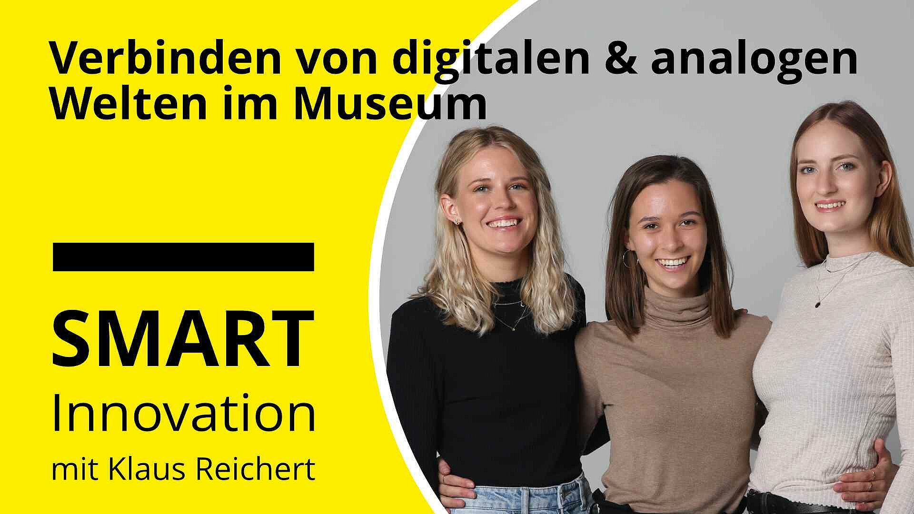
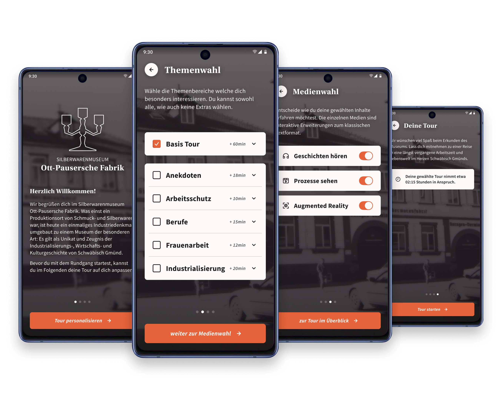
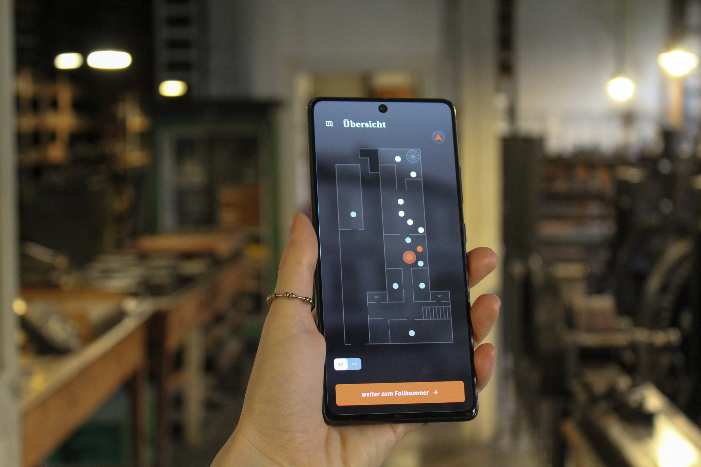
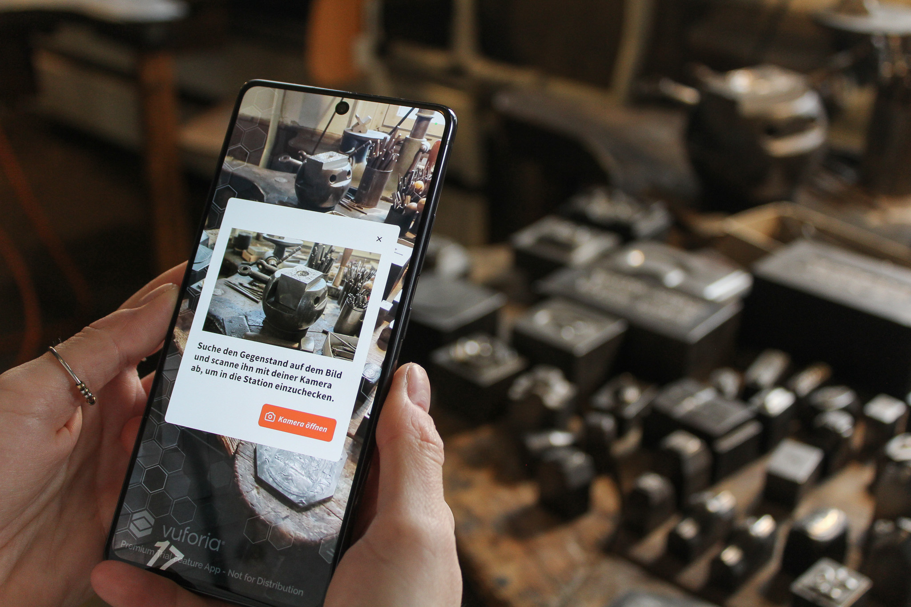
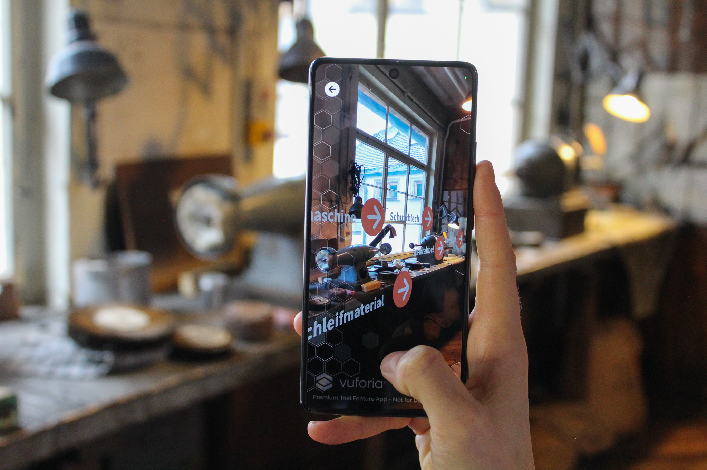
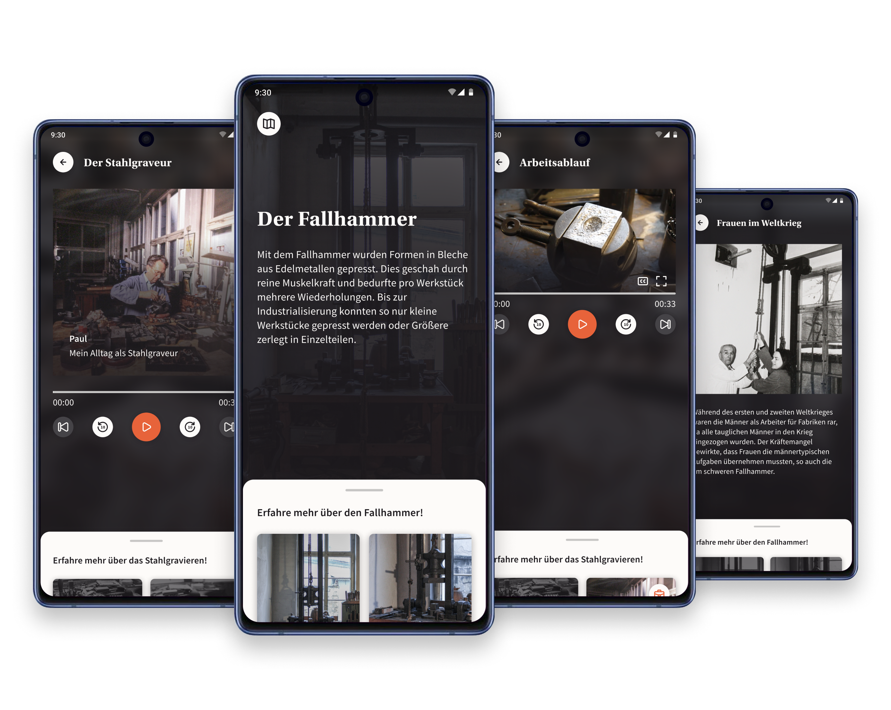

Exhibition Design, Application Design September 2022-Februar
2023 Bachelorarbeit Yvonne Becker, Sophie Vollmer, Lara Weiblen
Interaktive Strategien zur digital-analogen Inhaltsvermittlung im IndustriedenkmalDas Silberwarenmuseum Ott-Pausersche Fabrik in Schwäbisch Gmünd erzählt seit dem Jahr 1992 die
140-jährige Geschichte der weltweit erfolgreichen, schwäbischen Silberwarenfabrik.
Das einzigartige Museum strahlt eine besondere Atmosphäre aus und lässt Besuchende in eine
vergangene Welt reisen. Der denkmalgeschützte Ort trägt für die Stadt Schwäbisch Gmünd einen hohen
kulturellen und geschichtlichen Wert, welcher nicht nur die Historie der Stadt transportiert,
sondern ebenso bedeutend für die Vergangenheit des Berufs der Gold- und Silberschmiede ist. Auf
Besuchende haben die Räumlichkeiten die Wirkung einer Traumwelt. Diese Projektarbeit widmet sich
einer zeitgemäßen Überarbeitung der Vermittlungsmethode des Museums, um die weitreichende Geschichte
des Ortes erlebbarer und erfahrbarer zu gestalten. Zahlreiche Möglichkeiten bieten Raum, den
aktuellen Schauplatz zu erweitern und eine nachhaltige und lang anhaltende Erinnerung zu schaffen.
Dabei steht im Fokus den Charme der Stille, des Verlassenen und des Ursprünglichen beizubehalten.

Verbindung von analogen und digitalen Welten im Museum
Im Mai 2023 durften wir zu Gast bei Klaus Reicherts Podcast "Smart Innovation" sein und
über unser Bachelorprojekt sprechen, unsere Arbeitsweise und die einhergehende Thematik des
Möglichkeitenraums innerhalb der Erweiterung von analogen Inhalten durch digitale Elemente. Hör'
gerne rein :)
anhören
Durch die erschaffene Applikation für Smartphones ist die bedeutende Geschichte des Ortes
imposant begreifbar. Die Verwendung verschiedener Medien, wie beispielsweise
Audiospuren, in denen Arbeiter von damals berichten haucht, dem Ort Leben ein. Mithilfe von
Augmented
Reality können Arbeitsplätze und Maschinen erforscht werden, was einen abwechslungsreichen
und interaktiven Rundgang ermöglicht, der eine weitreichende Tiefe an Inhalten bereitstellt. Videos
erklären an
den Stationen die jeweiligen Arbeitsabläufe und Prozesse. Besuchende haben die Chance, die
glänzenden Bijouterien und Gebrauchsgüter durch die verjährten Arbeitsplätze zu begleiten und mehr
über deren aufwändige Bearbeitung zu erfahren. Um den urigen Charme und die nostalgische Atmosphäre
der Fabrik beizubehalten, wurde auf physische Eingriffe in das Original verzichtet. Das Konzept
leistet generische Strategien für ähnliche Industriedenkmäler weltweit.

Onboarding
Ein kurzes Onboarding ermöglicht eine Einleitung in die Thematik sowie die Individualisierung des
Erlebnisses. Besuchende können die Dauer ihres Aufenthalts bestimmen und die Einblicke erfahren, die
sie interessieren.
Navigation
Der Besuch der Fabrik wurde eingeteilt in 21 Stationen. Der Grundriss bietet einen überblick über
diese Stationen, welche bereits gesehen wurden und wo Besuchende sich aktuell befinden.


Check-In
Das erforderliche Einchecken an jeder Station stellt sicher, dass sich Besuchende mit der analogen
Umgebung befassen und sich auf die herrschende Atmosphäre einlassen. So kann der Blick vom
Smartphone abgewendet und ein Auge für Details entwickelt werden. Der Check-In findet teilweise per
Augmented Reality sowie per NFC Übermittlung statt.
Augmented Reality
Eingebundene Elemente definieren mithilfe von Augmented Reality Maschinenteile und Werkzeuge an den
Arbeitsplätzen. So kann das Verständnis gefördert werden und auch Fachfremde können die Inhalte
leicht aufnehmen.


Medien
Die Inhaltsvermittlung findet, bei entsprechender Medienwahl zu beginn, variabel statt. Einführungen
in die Arbeiten sowie einige Inhalte der Untertehmen finden textuell statt. Arbeitsabläufe werden in
Videos vorgeführt. Der Aufbau von Maschinen und Arbeitsplätzen wird mittels Augmented Reality
erklärt. Geschichten von ehemaligen Arbeitenden können in Audiospuren hautnah erfahren werden,
wordurch die Atmosphäre und Authentizität stark gefördert wird.